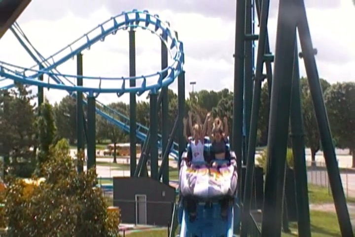
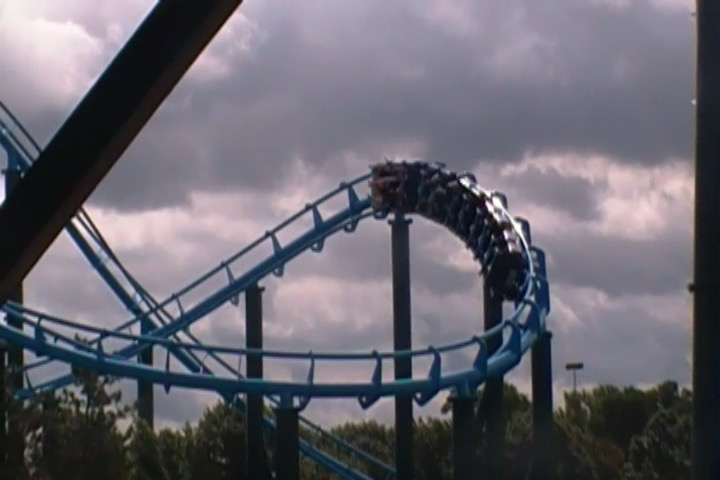
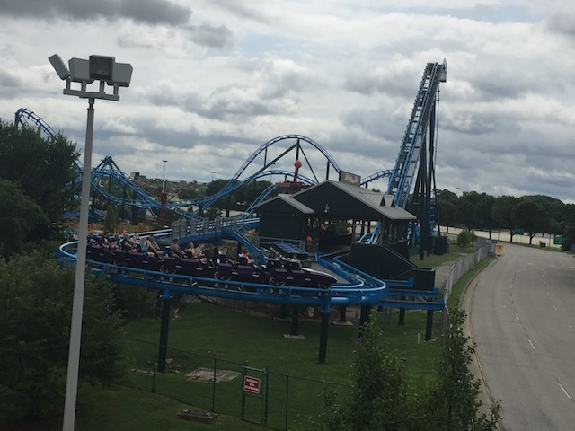

| |
Lightning Run Review

Today at Incrediblecoasters, we're going to be reviewing Lightning Run, the sort of...Mini Hyper. I guess that's what it is. It's sort of like a Mega-Lite in a weird way. It's certainly the closest thing we have to a Mega-Lite here in the U.S. And honestly, I'm kind of surprised that these things haven't caught on and become a cloned ride. They're really good, work in a small space, and it's the one thing that Chance has built that isn't a freaking kiddy coaster. So with that said, we hop in the trains, buckle the seat belt, pull down the lap bar, and away we go. We climb up the lifthill, get a decent look at Kentucky Kingdom's parking lot. But before you know it, we have reached the top of the lifthill and drop back down. I know it's not a big first drop, but it does give us a nice little bit of speed. We go around a turn and then head up an airtime hill, which gives us a nice pop of ejector air. Yeah. This really is starting to remind us of the Mega-Lites. We then head into a sort of turnaround hill. And yeah. It's at this point that you know that this isn't just a Mega-Lite and is its own unique ride. We then go around a turn, get some decent laterals, and into a small hill, which gives some nice ejector air. Go around a sort of turnaround with a hill in it. It's got a little bit of airtime, and hey. It's a fun element. And then...drop to the ground! WEE!!! Head around a low to the ground turn, get a few more laterals, up another hill, and down a sort of spiral drop. So we get some airtime and laterals here. A combination that I am always in favor of. We then go through a sort of S Curve, that gives us a decent amount of laterals. And then, we get to a big heaping serving of airtime. Go over a small hill. AIRTIME!!! Go over a second small hill. AIRTIME!!! Go over a third small hill. AIRTIME!!! And the drop isn't completely straight. So a teeny bit of laterals too. Finally, we go over another hill, getting another pop of airtime as we head into the brakes. So yeah. Lightning Run is really good. But in all honesty, it wasn't as good as I was expecting. I know I mentioned that this ride is sort of like a Mega-Lite with a little bit of Phantom's Revenge thrown in there. But I honestly prefer both of those rides to Lightning Run. I mean, I still really like it. I kept referencing the airtime throughout the ride, and it's there. It just wasn't quite as strong as I was expecting. Maybe it was just all the hype that this ride gets. Maybe it's just that I got a weak ride since I only got one ride on it, and it was in the very front row. So maybe it's crazier in the back. But even if its not, it's still a really good ride worth checking out if you're at Kentucky Kingdom. I wouldn't be surprised to see this thing get cloned and appear at other parks in the future. But for now, come see it at Kentucky Kingdom.
8/10
Location: Kentucky Kingdom
Opened: 2014
Built by: Chance Rides
Last Ridden: June 27, 2018
Lightning Run Photos




Home
|